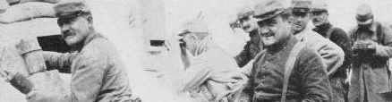

Background
Franco-Prussian War
For this period our primary representation would be the 5th Battalion of the Régiment Étranger. This unit was formed in 1870 and went into action almost immediately after its creation to defend Orléans on the 10th of October. According to the Legion's Livre d'Or, around half of the troops from this battalion were armed with Chassepots and the remainder were equipped with percussion muskets. The exact model of these is unclear; although the French government had been buying Enfield 1853 rifles, amongst other weaons, from the UK and US, these were probably French weapons of Crimean war vintage.
In addition to this shortage of weapons the 5th battalion was also short of camping equipment, haversacs and draft animals. Although an official pattern of uniform was specified it is unclear how well this unit was supplied with it. The “metal” colour was silver, rather than the usual infantry gold, with green and red epaulettes as used for fusiliers during the Crimean period rather than the modern pattern of green and red epaulettes introduced for the Legion more recently.
Of course, the volunteers serving in the 5th battalion would have been men. We are quite happy for women to join but in this case it would be necessary to find an alternative impression. One possibility is to represent one of the female combatants of the Communards, who defended Paris against the recapture attempts by the legitimate French government. Régiment Étranger troops participated in this brutal action.
We have the complete uniform regulations for this period available.
First World War
We have chosen to represent the 2nd marching regiment of the 2nd foreign regiment. This unit was officially merged into the RMLE on the 20th of October 1915.
On first going into action the Foreign Legion units on the Western Front would have been equipped with the same uniforms as the metropolitan French infantry, i.e. a blue-grey greatcoat, képi with cover and red trousers. A surviving photograph of Alfred Theodore Cooke, a British Legionnaire who died early in 1915, shows him wearing this uniform. He is equipped with an artilleryman's belt, presumably as a result of the many shortages of equipment which plagued the French army as they attempted to mobilise as quickly as possible to resist the invader.
As 1915 developed the French army would have gradually been equipped with a horizon blue uniform, and photographs from early 1915 often show the picemeal replacement of uniform items as the new uniforms became avaialble. The photograph at the head of this section, showing American volunteers, shows the typical appearance of French troops of the period. The greatcoat worn at this time would have been the Poiret model, in a variety of light blue shades.
From the beginning of 1916 the Legion was re-equipped with khaki uniforms, as issued to French colonial troops, with a horizon blue helmet until they received an issue of khaki paint in June or July of 1916. Unfortunately, these khaki uniforms are difficult to obtain, and so we have been exploring other options to represent French troops from later in WW1 whilst we attempt to source a suitable supply. One such possibility is to represent the 133rd infantry regiment. The American poet and Legionnaire Alan Seeger reported in his memoirs that in 1916 American volunteers were offered the honour of joining a metropolitan French unit, of which his choice would have been the 133rd infantry regiment. This therefore remains a possibility for representing volunteers later in the war without the availability of khaki uniforms. We also work with units representing the 69th and 172nd regiments of the great war, so having horizon blue uniforms is very useful in order to present a coordinated appearance.
We may also be able to assist with female impressions or perhaps territorial infantry for the older reenactor; please do get in touch to discuss if you are interested.
Second World War
Under construction...